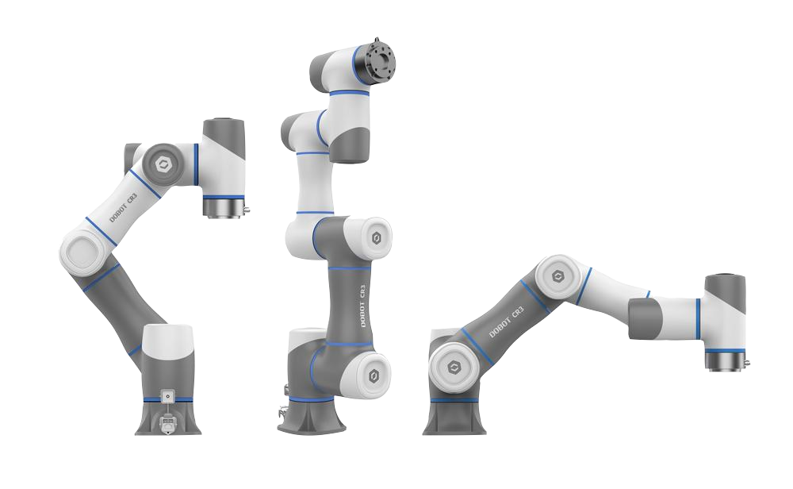

Dobot CR-Series Cobots
Industrial & Cobot arms built to power the automation of your business. These high accuracy platforms are ideal for working environments where people are near by, featuring built in collision detection & avoidance. Cobot arms are also intended to be far simpler to deploy. Physically pose and capture movements with the touch of a button and record sequences of movements without any programming knowledge. Visual Programming interfaces also make automation setup attainable for those with no coding experience.
What’s Here
- Specifications - Specifications for the CR Cobots and related hardware.
- Getting Started - Guides to walk you through the process of setting up your cobot.
- End Effector Selection - Specification and usage information about related industrial end effectors.
- DobotStudio Pro - Guides on how to use Dobot’s Industrial Control software.
- DobotSCStudio - Guides on how to use Dobot’s legacy Industrial Control software.
- I/O Interface - Guides on how to use the cobot’s I/O interface.
- Modbus Interface - Guides on how to use the cobot’s Modbus interface.
- TCP/IP Protocol - Guides on how to use the TCP/IP protocol.
- Cobot Applications - Guides on how to set up different applications like pick and place.
Choosing the Right Cobot
The CR Series of Industrial Cobot arms offer payload capacities of 3kg, 5kg, 10kg and 16kg and a maximum reach of 795mm to 1525mm making them suitable for a wide variety of environments. When choosing a platform, the space in which the arm will operate and the weight of the objects being manipulated are the two largest factors in determining which model will work for your application. We recommend determining the weight and reach requirements before selecting the appropriate platform.
See the CR-Series Family Specifications for more specific information about each arm.
Choosing the Right End Effector
With the many different applications of cobots in manufacturing there’s an equal if not greater number of customized end-tooling that can be deployed with the platforms. There are many different considerations when choosing the right end effector for your application, machine tending, sanding, screw driving etc. all require very different end effectors that perform specific tasks. Many tasks can be accomplished with the use of a simple electric finger style gripper. We offer many different end effectors to suit almost any application. If you need assistance in selecting one or don’t see what you’re looking for, let us know.
See End Effector Selection for more specific information about end effector concepts and the selection we offer.